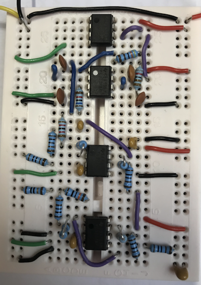

Amplifier Design
Imperial College London
The aim of this experiment was to understand the capabilities and limitations of operational amplifiers, design individual op-amp stages using non-ideal op-amp models and appreciate trade-offs and pitfalls in high-gain lownoise amplifier design.
This is an electronics design-make-test exercise.
In this experiment I carry out a practical filter design exercise using Sallen-Key second order low pass stages. It is a simple substitution of resistors in the place of capacitors and vice-versa to obtain the low pass filters.
